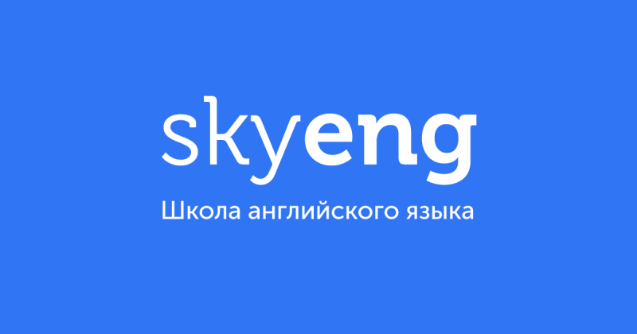

Skyeng Online School
It was my first official work experience. I was working as an English tutor in an online school Skyeng. I was responsible for delivering lessons for General English learners of different levels and ages. Apart from teaching skills, I have learned time management and strong communication skills. I have also developed interpersonal skills as I needed to create a bond with students to ensure their effective learning. 